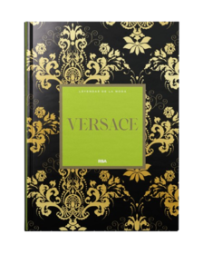

VERSACE

El libro Leyendas de la Moda: Versace
Leyendas de la moda: Versace Este libro celebra la creatividad y el legado de Gianni Versace, uno de los diseñadores más audaces e influyentes del siglo XX. Se exploran sus comienzos en Calabria, su ascenso en Milán y la revolución que supuso su estilo: audaz, sensual y teatral. La obra combina fotografías exclusivas, testimonios y anécdotas que revelan cómo Versace transformó la moda en arte, fusionando glamour, cultura pop y lujo extremo. Además, se destaca cómo su hermana Donatella Versace ha mantenido vivo el espíritu de la marca, continuando la tradición de innovación y extravagancia que caracteriza a la casa italiana. Este libro es una verdadera joya para los amantes de la moda, ofreciendo un viaje íntimo por la historia y estética de Versace.

Los perfumes Versace
Los perfumes Versace Los perfumes de Versace son una extensión olfativa de la audacia y el glamour que caracteriza a la casa italiana. Cada fragancia captura una identidad única: desde la delicadeza femenina de Bright Crystal hasta la fuerza y sensualidad de Eros o Dylan Blue. Con composiciones sofisticadas y notas elegantes, estos perfumes reflejan lujo, poder y estilo, mientras que sus frascos, adornados con la icónica Medusa, se convierten en verdaderos objetos de deseo. Más que aromas, representan la esencia de Versace: elegancia teatral, pasión mediterránea y un espíritu irreverente que desafía lo convencional.

Los tacos Versace
Los tacos Versace Los tacos de Versace son el símbolo más audaz del glamour y la sofisticación de la marca. Cada diseño combina arte y moda, fusionando líneas clásicas con detalles provocadores y modernos. Desde los icónicos Medusa Aevitas hasta los Platform Pumps, estas piezas destacan por sus plataformas altas, acabados dorados y una estética que realza la figura femenina. Más que calzado, los tacos Versace son una declaración de estilo, confianza y personalidad, reflejando la elegancia teatral y la visión vanguardista que define a la casa italiana.
Publicado por Martina Romero en Octubre 2025